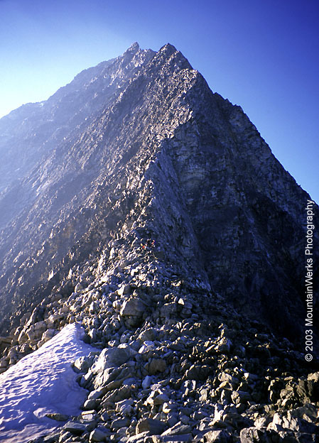
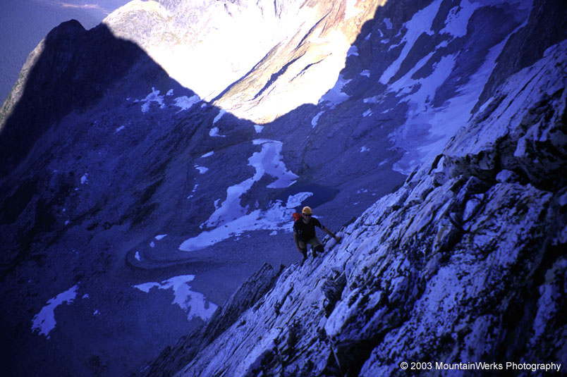
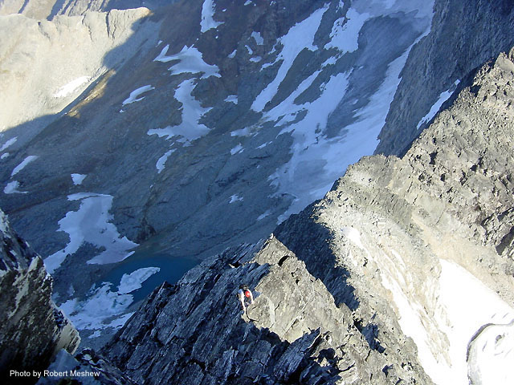
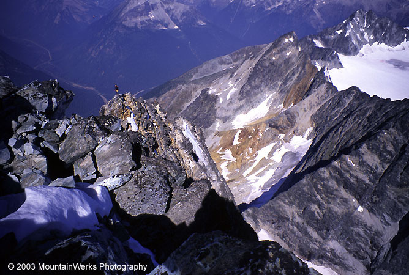
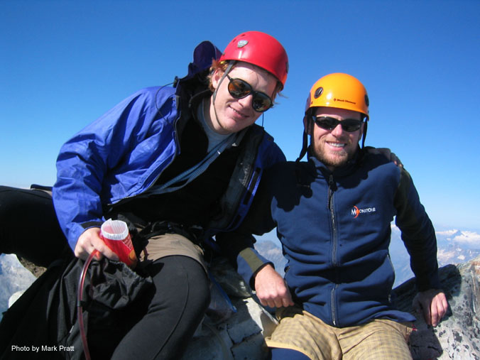
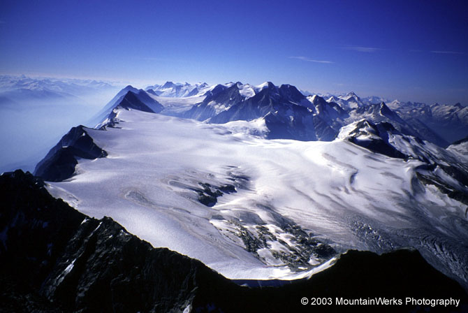
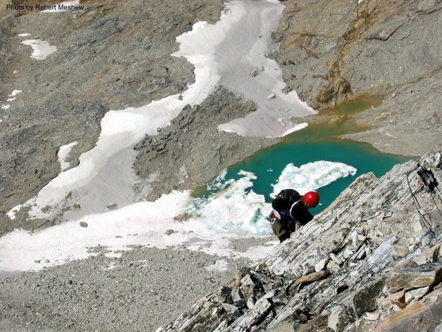
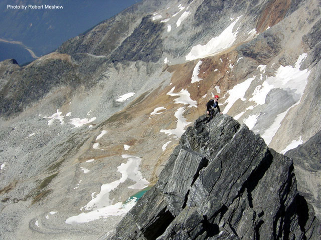

Mount Sir Donald, NE Arete
Northeast Arete (5.5)
August, 2003
Robert Meshew, Mark Pratt, Michael Stanton
The three of us drove to Roger’s Pass, and went into a park service building. Conditions on the Arete promised to be very good. We made the mistake of browsing some pages about a new rappel line on the lower portion of the route. It looked kind of complicated after the initial rappels, but the shop was closing and we weren’t worried about it.
Many camp sites were full, but we finally found an overflow campground. Settling in for a bivy on the dirt (not quite as nice as the luxury we were used to in the Kain Hut), we sorted our gear and went to sleep. We got up around 3 am the next morning, with our packs already prepared. Robert and I hiked up the dark trail while Mark did something back at the car. We knew the Sentinel would soon catch up! He caught us as the weak light of dawn made it just possible to see without lamps. We’d climbed out of a forest pretty quickly, and were now traversing a hillside with bridges over raging creeks.

The route visible from the col.
Somehow I was setting the pace up the increasingly steep trail. I felt pretty good about that, until Mark and Robert managed to get in front of me! Now I continued along behind, wheezing painfully. Had I learned nothing? Oh well, I may not be fast, but at least I’m well…comfortable with being grungy? Anyway, the trail was ridiculously steep and I tried to lose myself in the increasing view of peaks across the valley. The air was hazy with smoke, and the smell of burning seemed dangerously close.
We climbed aboard a very distinct moraine with a trail on the crest, and gradually traversed under the peak to the northeast ridge. After 4000 feet or so of non-stop hiking, I wanted a rest at the col. But Mark already took off, and Robert was itching to go too. We had decided to solo the route, but bring a rope and some gear for the descent or any problems. The climb is “specimen 4th class,” but definitely has some 5th class moves getting over short steep walls. The exposure is really incredible too.
There were two other parties. A guide and his client, who traveled pretty fast. Also, a pair of older guys who were pitching the whole route out with fixed belays. That method didn’t work for them, and they turned around about halfway up. I think soloing or simulclimbing with belays at cruxes only may be a better way to go.

Robert on firm quartzite of the arete.
By the time I started, I was pretty far behind Mark and Robert. Eventually I asked Robert to wait for me, because I made a few route-finding mistakes that slowed me down. If I could keep him near the horizon, that would avoid costly detours.
Early on, the route was steep and loose. After a few hundred feet, it became possible to stay just on the right side of the crest, where very solid quartzite rock made up in solidness what it charged in steepness and exposure. There was huge air beneath my feet.
Gradually I recovered from being wasted on the approach, and started to enjoy the climbing. I caught up to Robert, and passed him when he changed some film or just stopped to stare at the M. C. Escher-like views of ridges and faces. These long routes are amazingly fun when you get into the zone of movement. I was only semi-conscious of the choices I was making. I just felt the pleasant exertion of synchronized movement, and enjoyed the contrast of sun on the left of the ridge and cold air on the right.
A few times I’d see Mark up ahead on some steep ground and wonder how to surmount it. But I’d just swim up to the rock step and soon be standing on top, enjoying watching Robert climb along like a copy of myself. It seemed to go on for hours. There were 2500 vertical feet to climb.
Suddenly there was no more up to go, and I walked to the summit to exchange a greeting with the Sentinel. Robert appeared, and we marvelled at the continental views of glaciers and broad valleys. I remember yawning and eating a sandwich contentedly.

Me climbing low on the route.

Robert approaching the final slopes.

Robert and I on the summit. HIT cookies!

An awesome view to the south.
We started down. Robert and I had decided to rope up and simul-climb, while Mark (characteristically) descended solo. Robert and I took turns for many long leads down. Finally we reached the rappel anchors on the lower third of the route. These anchors take you off of the ridge and onto a slabby face. We were kind of tired, so opted to make those rappels. We made five of them. Annoyingly, I had a hard time seeing the next anchors, and wasted minutes looking for them. We reached a scrambling section, and started looking for the next rappel anchor. This time, neither of us could find it. We scrambled up and down a 200 foot section of the face, unable to see a safe way to climb down further. We were both pretty tired. Robert realized our only choice was to try and traverse back to the ridge crest 400 feet lower than where we had left it. Unroped, we crossed several ribs on a stressful traverse of the face. “This sucks,” I remember thinking. A few loose blocks and a sketchy move under an overhang added to the sense of seriousness and insecurity. Finally, we made it back to the crest. Robert displayed great leadership in knowing the unpleasant work we had to do and going for it.
Back on the ridge crest I sort of collapsed from the strain. I was just plain tired of living with such exposure, and the lower 400 feet of the route had plenty to keep me worried. It was loose yet steep, and kind of devious because we didn’t stay on the crest coming up this section. Robert also wanted off, and took off far ahead. I got to where I didn’t trust myself to go without making a mistake. So I started rappelling: a really slow, almost futile process. Every rappel would tangle, and I’d only get about 30-40 feet with each one. Then I’d have to walk or downclimb a ways, coiling the rope each time if I didn’t want it to tangle badly. I knew the guys might be worried about me at the col, but I couldn’t safely go any faster.

Me on our simul-climbing descent.
After 3-4 rappels, I realized I could be there all night with that style, and I had to start downclimbing in earnest. I’d gotten some mental rest with the process, and was ready to face the steep descent again. One especially steep section is imprinted in my brain. There were some committing moves where I had to trust some suspect blocks as hand or footholds. In one case, the trust was misplaced, and I caught myself as a foothold tumbled away. That gave me more focus and energy somehow, maybe a little bit of anger. I arrived at the col to a visibly relieved Robert and Mark. Robert said he’d had a close call too. Mark had spent a couple of hours waiting for us (he didn’t make the costly rappelling detour).
A lesson? It’s a long, exposed, committing route. It’s possible to get mentally tired of the exposure, something I hadn’t really experienced before. Probably best to stick together, because that way you don’t have to independently chose the ascent/descent, and can mentally draft on your partner a little bit, taking turns on the sharp end of decision making.
We hiked down, me thinking my own thoughts about the route, and things I’d learned. We descended to the valley, reaching the forest in hot late afternoon. I brought up the rear as usual, eavesdropping on a comical camera crew getting footage for a nature show. We zoomed away from the mountain, making some miles on the long drive home.
We got a motel room in a small town. I was too tired to take a shower, but just crashed immediately. The next day, we continued west under Yak Peak, then crossed the border back into the U.S. It was great to be home and see Kris! We had a great evening and day together before the next trip into the mountains. But that is another story…
Special thanks to Mark and Robert. They are some great guys to climb with. Oh I forgot to mention something funny. Robert tends to liken situations we might come across to “a tragedy of the commons.” And Mark says “you think everything is a tragedy of the commons!” And then they’ll argue about a Malthusian crises or maybe the Dining Philosophers problem or something equally interesting! Capital fellows…

Me on the descent again.